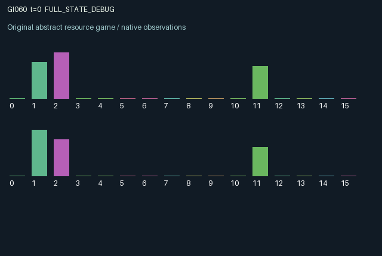

GI060 / LEGACY_ARRAY
astra-d2-00060: Expiring authorization and delayed bilateral escrow
2 agents5 actions16 observation columns32 original horizonRuntime: PASS
Release verification episode
Untrained uniform legal actions. Actual JAX state sampled along the full original episode; full-state debug camera. No human performance or learning claim.

Run this game
crucibles play --game 60
Start Python locally, then open the address printed by the terminal. Installation, multiplayer, takeover and keyboard controls →
Objective, rewards & ending
Exact task contract
{
"termination": "Original kernel t >= 32; see mechanism and source"
}Declared per-step reward bounds: -1.0 to 1.0. Observability: source_defined.
Rules
Original mechanism document (historical status wording retained)
# astra-d2-00060: Expiring authorization and delayed bilateral escrow This parentless source proposal implements voluntary exchange with independently expiring authorizations. Each agent owns a bounded inventory and escrow balance. A deposit makes inventory publicly committed but remains recallable. Settlement occurs automatically when both escrow balances are at least 0.2 and both signatures are active. Each side transfers its entire balance, so the two transferred quantities can differ. A signature lasts for at most three observed states, decrements before the next settlement check unless renewed, and is consumed by settlement. This creates a timing and hold-up problem: a partner may deposit, wait, authorize, or recall before the other authorization becomes effective. Actions are 0 wait and replenish inventory; 1 deposit up to 0.3, subject to inventory and escrow capacity; 2 sign; 3 recall one's entire escrow; 4 inspect the partner's valuation for three observed states. Every action is legal, including actions that currently have no material available. Each inventory and escrow has capacity one; inventory overflow is discarded. Released quantities enter the recipient's two-slot pipeline. A new transfer occupies slot 1, moves to slot 0 on the next step, and arrives on the following step. Delivery produces the recipient's private per-unit utility and restores 0.6 inventory units per delivered unit. Reward therefore follows a previous joint commitment rather than the current deposit or signature. One agent's recall can prevent the other's expected receipt; one agent's deposited quantity directly determines the other's eventual delivery. A transfer still in the pipeline at termination is preserved in terminal state and receives no fictitious post-horizon payoff. Valuations are independently sampled in [0.55, 0.95) at reset and remain fixed. Inventory, escrow, signatures, pipeline amounts, and the partner's most recent withdrawal are public. Each agent knows its own valuation; inspection temporarily reveals the partner's valuation. Inspection is optional and is not required to execute exchange. Whether its information is worth its cost is an empirical question, and the source makes no claim that every action is optimal somewhere. Observation columns 0 through 15 are: normalized time; own and partner inventory; own and partner escrow; own and partner signature lifetime divided by three; own incoming pipeline slots 0 and 1; partner incoming slots 0 and 1; own valuation; inspected partner valuation or zero while hidden; inspection lifetime divided by three; own most recent outgoing transfer; partner's most recent withdrawal. Zero cannot be confused with a revealed positive valuation. The per-step reward is delivery times own valuation, minus 0.15 times deposited quantity, 0.025 for signing, 0.04 for inspection, and 0.08 times recalled quantity. The final expression is clipped to [-1, 1] as an explicit utility cap. Delivery and all balances are bounded by one; payments are action-specific costs, not reported experimental performance. Waiting replenishes 0.04 inventory and has no direct utility. The generic relation is to bilateral escrow, asynchronous commitment, and voluntary exchange. The proposal adds no claim of novelty over all possible games or of program nonisomorphism. It was authored without benchmark sources, other proposals, or outcome feedback. Both roles have the same action interface but independent state, values, and decisions. Interface: two agents, sixteen float32 observations per agent, five legal discrete actions, and termination when the incremented int32 time reaches 32. This artifact is source authoring only. No candidate execution, isolated validation, compiler result, mechanism qualification, duplicate decision, or learning-effectiveness result is asserted.
Commands
0Action 0; see mechanism and source
1Action 1; see mechanism and source
2Action 2; see mechanism and source
3Action 3; see mechanism and source
4Action 4; see mechanism and source
Roles & abilities
agent_0 Original legacy agent; see mechanism and source
agent_1 Original legacy agent; see mechanism and source
Observation permissions
Training receives only the original observation rows. Role cameras use declared visibility; debug cameras are explicitly marked. Local benchmark records log debug exposure and role takeover history.
Exact observation layout
[]
Entity visibility & attributes
[]
Actual verification & provenance
Per-game execution receipt
{
"game": "gi060",
"status": "PASS",
"verification_revision": 2,
"source_sha256": "6ad2cb3fb3f9dd36ec328bfba2c1eeb801ea86a1c4b6e7f498fa550bcb5e8a09",
"seed": 20261101,
"runtime": {
"jax": "0.4.38",
"numpy": "1.26.4",
"devices": [
"TFRT_CPU_0"
]
},
"dimensions": {
"num_agents": 2,
"observation_size": 16,
"num_actions": 5,
"max_steps": 32
},
"checks": {
"eager_reset": {
"status": "PASS",
"seconds": 0.69921875
},
"observation_spaces_legal_masks": {
"status": "PASS",
"seconds": 0.19803595542907715
},
"eager_step": {
"status": "PASS",
"seconds": 0.61065673828125
},
"jit_reset": {
"status": "PASS",
"seconds": 0.368896484375
},
"jit_step": {
"status": "PASS",
"seconds": 0.22955799102783203
},
"eager_jit_integer_parity_float_measurement": {
"status": "PASS",
"seconds": 0.0010006427764892578
},
"jit_vmap_reset": {
"status": "PASS",
"seconds": 0.5988364219665527
},
"jit_vmap_step": {
"status": "PASS",
"seconds": 0.241469144821167
},
"outer_autoreset_api": {
"status": "PASS",
"seconds": 0.6120424270629883
},
"full_original_horizon_episode_and_render": {
"status": "PASS",
"seconds": 1.6168971061706543
}
},
"human_scores": null,
"browser_controls": "PENDING",
"failures": [],
"elapsed_seconds": 5.60407018661499,
"float_parity_max_abs": 0.0,
"numerical_parity": "EXACT",
"raw_terminal_absorbing": "NOT_PART_OF_ORIGINAL_LEGACY_CONTRACT",
"terminal_outer_reset": "PASS",
"episode_steps": 32,
"scripted_random_returns": [
-0.47961786203086376,
-0.6296837478876114
],
"terminal": true,
"demo_information": "FULL_STATE_DEBUG",
"demo_frames": 33,
"render_roles_checked": 2
}Chromium control verification
{
"game": "gi060",
"status": "PASS",
"human_scores": null,
"engineering": true,
"checks": [
"catalog_selected_and_real_native_reset",
"dom_queue_and_native_step",
"second_participant_ownership_and_native_joint_step",
"all_roles_individually_controllable_no_role_cap",
"explicit_debug_camera",
"release_to_pure_ai_without_reset"
],
"seconds": 4.943833827972412
}Original identity and file hashes
{
"id": 60,
"key": "gi060",
"title": "astra-d2-00060: Expiring authorization and delayed bilateral escrow",
"summary": "",
"tags": [],
"family": "legacy_array",
"dimensions": {
"num_agents": 2,
"observation_size": 16,
"num_actions": 5,
"max_steps": 32
},
"source_sha256": "6ad2cb3fb3f9dd36ec328bfba2c1eeb801ea86a1c4b6e7f498fa550bcb5e8a09",
"manifest_sha256": "940a9b32c0a6e54f35689a3499b4d99ee300609de2190c2940080b3d16b76c3e",
"files": [
{
"file": "candidate.py",
"sha256": "6ad2cb3fb3f9dd36ec328bfba2c1eeb801ea86a1c4b6e7f498fa550bcb5e8a09",
"bytes": 4268,
"origin": "work/exp_2/astra_generation/discovery_v2/initial/candidate_00060/attempt_00/candidate.py"
},
{
"file": "mechanism.md",
"sha256": "5e0b8f7d84b8c34f9af4bf2061bc1a3618a1db7969f8a9d9464fda420eea5974",
"bytes": 3853,
"origin": "work/exp_2/astra_generation/discovery_v2/initial/candidate_00060/attempt_00/mechanism.md"
}
],
"original_status": "LEGACY_SOURCE",
"original_saved_replay": false,
"release_validation": "PASS",
"human_scores": null,
"browser_validation": "PASS"
}